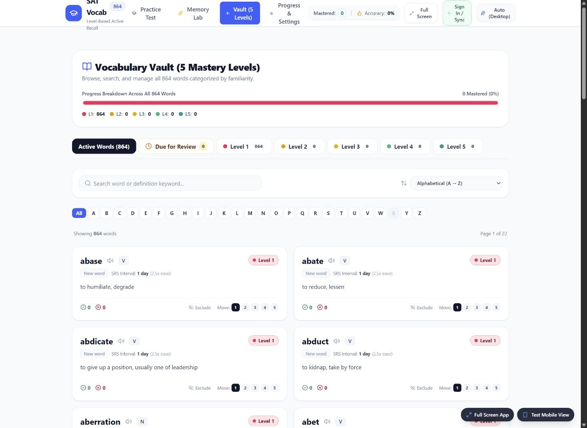
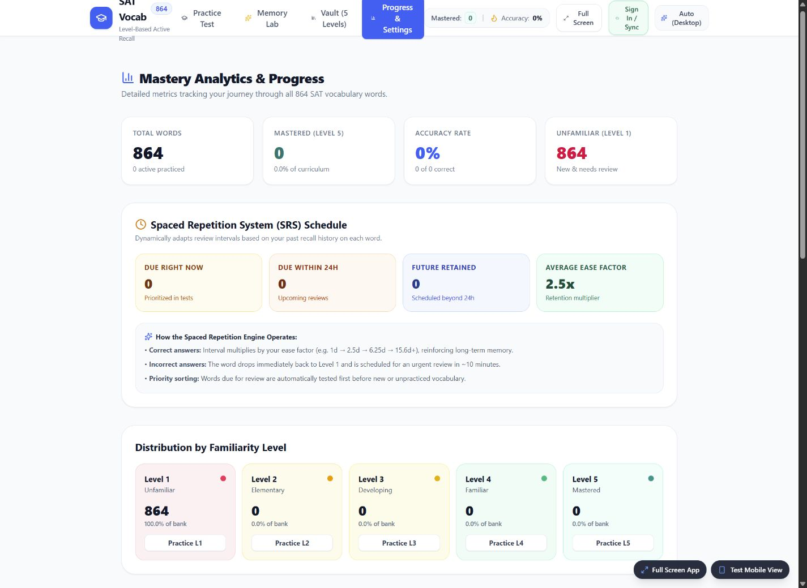
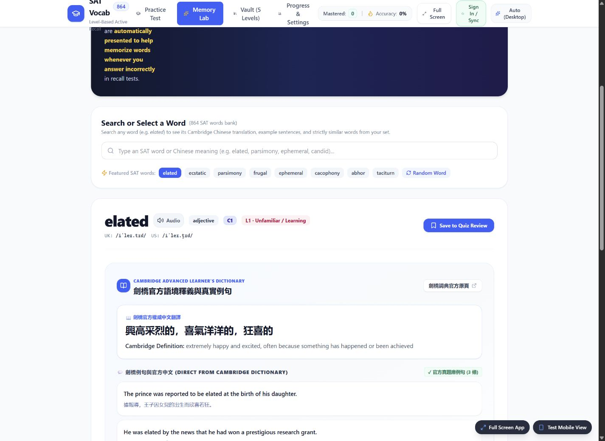

My notes at the point of review
After either a correct or incorrect answer, the review drawer brings the saved Memory Lab note alongside contextual reference material.
I wanted vocabulary practice to connect testing, my own memory notes, and the next review. I built an app that brings those steps into one study loop.
I already had a workflow for memorizing SAT vocabulary: study a word, create a memory association, test myself, and review it later. Moving between those steps added effort that I wanted to spend on studying.
I combined the workflow into one app so my memory notes appear when I answer a question and the next review is scheduled from the same place. The goal was to make each study session easier to manage.

The vault puts search, initial-letter filters, and familiarity levels around the same word bank, keeping lookup and review connected.

After either a correct or incorrect answer, the review drawer brings the saved Memory Lab note alongside contextual reference material.
An SM-2-based scheduler updates word progress and the next review date, helping organize what to revisit.
Memory Lab keeps personal mnemonic notes connected to the word and makes them available during later practice.
The vocabulary library, practice screen, memory notes, and review schedule share the same word state. I can work on an association and see it again when testing that word, rather than searching a separate notebook.
The app also groups words by mastery tier and lists items due for review. These are tools for organizing study; the project does not establish a measured improvement in SAT scores or long-term retention.
The progress view groups review timing and familiarity levels so the next study session has a starting point.

Originally, mnemonic notes were visible only in Memory Lab. The quiz showed correctness and dictionary information, leaving the personal association outside the feedback loop.
I connected the saved notes to the post-answer drawer for both correct and incorrect responses. For a word without a saved note, a link leads back to Memory Lab. I checked the behavior across words with and without notes.
Memory Lab brings word lookup, dictionary context, and related words into one workspace. This capture shows the lookup view; personal mnemonic entry and post-answer recall were not exercised.

A local progress change could trigger a cloud write, whose snapshot listener updated local state and triggered another write. I added guards that compare the serialized payload with the last saved or received state, alongside a 1.5-second debounce.
This reduces redundant writes during study. Local storage provides a fallback when cloud access is unavailable; loading the entire app offline remains a separate planned feature.
I designed the practice and Memory Lab workflow, implemented the SM-2-based scheduling logic and review drawer, worked on cloud synchronization and responsive layouts, and curated the vocabulary dataset described in the brief.
AI assistance supported initial scaffolding and optional seed mnemonic ideas. I reviewed and revised the application logic, error states, and layouts.
Vocabulary search, quizzes, personal mnemonic notes, review scheduling, mastery views, browser pronunciation, and local/cloud progress storage.
Custom decks, passage-based practice, and fuller offline support. The gallery now includes live browser captures; no answer was submitted and no mastery level was changed.
Scheduling is based on the SuperMemo SM-2 concept by Piotr Wozniak. The source brief identifies Cambridge Dictionary as the contextual reference source.